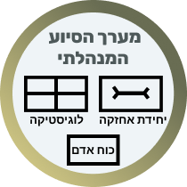
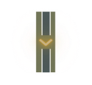
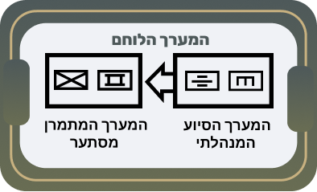
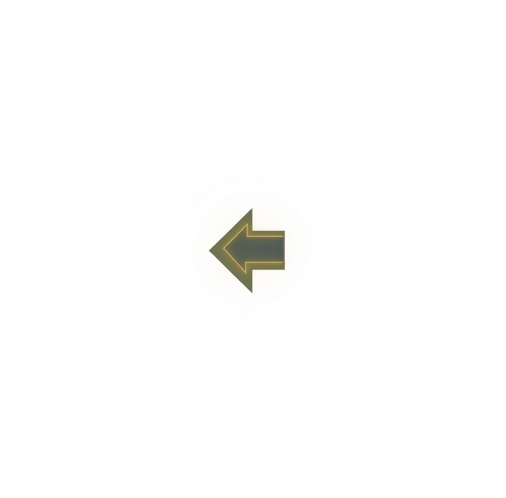
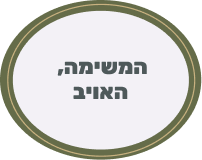

כל גוף צבאי הממלא משימה או מסייע לה, משתייך למערך מסוים. המערכים מחולקים לשני סוגים עיקריים: לוחם ומנהלתי. חלוקה זו נעשית לצרכי בניין הכוח - אך בשדה הקרב כולם פועלים יחד להשגת המשימה.





הנחיות לתרשים:
התרשים שלפניכם מציג את השתלשלות המערכים. העבירו את העכבר ולחצו על חלקי התרשים כדי לקרוא על תפקידו של כל מערך בשרשרת הפיקוד הלחימתית.